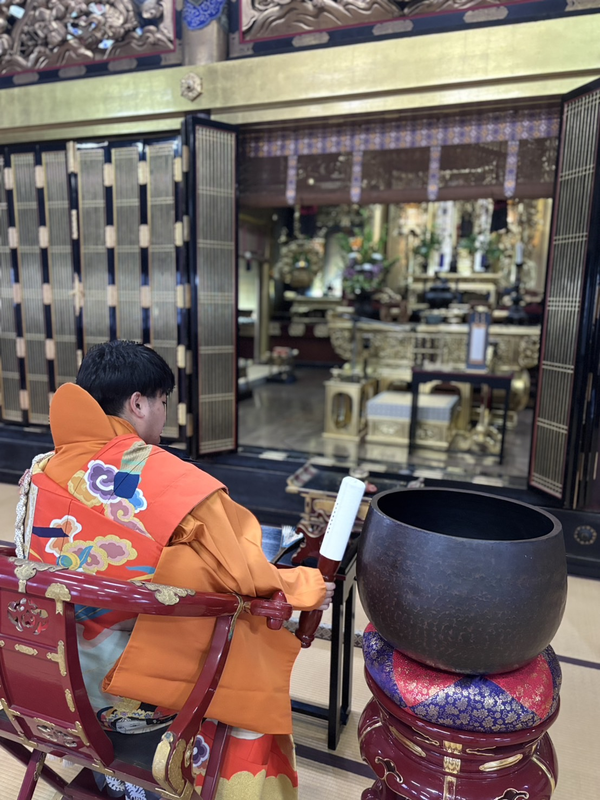
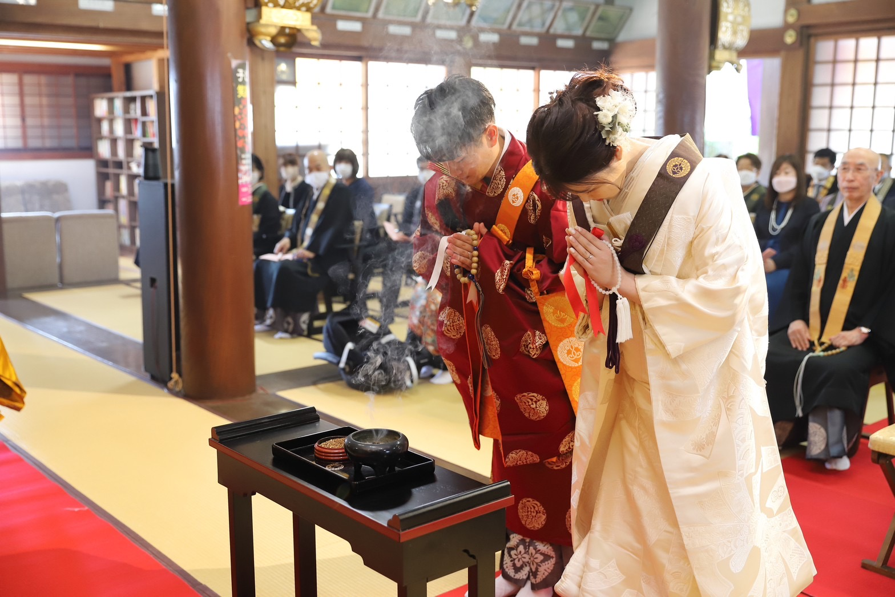

式典
ceremony
葬儀

葬儀は亡き人をご縁として阿弥陀如来のみ教えを聞き、いのちの尊さと無常を受けとめ、仏恩報謝の生活を歩むことを確かめる大切な仏事です。
基本的な流れは、
臨終勤行（枕経） 亡くなられてすぐ行うお勤め
※出棺勤行 出棺にあたり行うお勤め
通夜勤行（お通夜） お葬式の前夜に行うお勤め
葬場勤行（お葬式）
火屋勤行（火葬） 火葬前に行うお勤め
※還骨勤行 お骨になって帰ってこられた際に行うお勤め
お寺参り 葬儀を終えお寺の本堂でご縁を自覚し受け止める場。そして、今後の日程などを決めます。
後日
中陰（七日参り） 四十九日まで、七日ごとに行うお勤め。
満中陰（四十九日） ご法事
※納骨法要 納骨にあたり行うお勤め
なお、※のお勤めは、近年行う方と行われない方がおられますので、お知らせください。
また、日程・金銭・場所など、さまざまなご事情があると思いますので、希望がありましたら、いつでもご相談ください。できる限り希望に添えるように行います。
仏前結婚式

浄土真宗では、結婚は単なる人生の節目ではなく、阿弥陀如来のご縁によって二人が出遇い、新たな家庭を築くことへの感謝を表す仏事です。
夫婦は互いに支え合うだけでなく、仏法を聞き、念仏の生活を共に歩むことを誓います。
初参式

一般的な言葉ではお寺のお宮参りとしてしられます。
阿弥陀如来より尊いいのちをいただいたことに感謝し、その子が仏縁に恵まれ、念仏申す人生を歩むことを願い、寺院・本堂へ初めてお参りする儀式です。
初参式は、子どもの誕生を阿弥陀さまにご報告し、尊いいのちをいただいたことを喜び、ご家族そろって仏さまのお話を聞く人生の第一歩となる大切な仏事です。